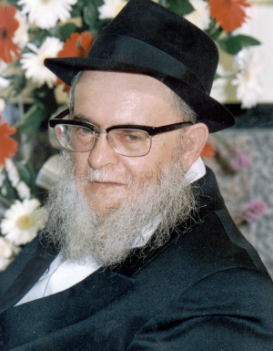

From the Sayings of Chassidim
A wonderful collection of stories and sayings, recorded by the Chassid, Rabbi Shlomo Galperin a”h, which he heard from the elder Chassidim We thank the Galperin family for giving Beis Moshiach the privilege of being the first to publicize this collection of stories.

The Tzemach Tzedek once said to a Chassid: Why fast with your stomach? Fast with your tongue. That is, instead of fasting and being hungry, it is preferable to fast with words. Do not say that which is unnecessary.
(R’ Eliezer Horowitz)
EATING WITH
AN APPETITE?
A shochet in the city of Nikolayev, before receiving his commission, spoke with the Rebbe Rashab about his spiritual state. One thing he mentioned was that since he began working in sh’chita, he ate with an appetite. When the Rebbe heard this, he shuddered. The shochet said that the Rebbe’s horror was something he would never forget.
(R’ Eliezer Horowitz)
DESIRE TO LEARN
A Chassid complained to the Tzemach Tzedek that he has no desire to learn. The Tzemach Tzedek said, “And what should I do when I do want to learn?”
The simple explanation is, when a person has no desire to pray and he prays anyway and he prevails over his yetzer, up Above they take pleasure, for when the sitra achra is squelched the glory of Hashem is elevated in all the worlds. But a tzaddik, who is completely devoted to Hashem on the highest of levels, doesn’t have the opportunity to have this struggle.
THE SPARK
AND THE BELLOWS
From the aphorisms of R’ Chaim Shaul Brook z”l:
“I just light the candles; burning is something they have to do on their own.”
The explanation is: A rich man traveled to a fair and returned with many presents for his family. For the maid he brought a bellows with which to blow air on to the coal and ignite the fire so she would not have to exert herself.
The maid took the gift and after a while the rich man asked her how she liked it. She plaintively said she did not enjoy it at all.
“Why?” asked the rich man.
She said: I blow and blow with the bellows and no fire is ignited, so who needs it?
The rich man said: Oy fool, is it the bellows that creates the fire? When there are coals and they are lit, then the bellows makes the fire bigger, but without fire there is no use for a bellows.
With this we can explain what R’ Chaim Shaul said. The candle burns if you ignite it with fire, i.e. avodas Hashem. Then it is up to you to make it bigger. You need to serve Hashem with Torah and mitzvos and with the avoda of t’filla. The mashpia only ignites the talmid by directing him in avodas Hashem.
THE “KNEITCH” AND TIKKUN CHATZOS
From R’ Chaim Shaul Brook:
From the time they started being particular about the crease in their pants that it be straight and ironed, they stopped doing tikkun chatzos. For in order to preserve the kneitch (crease) so it doesn’t, G-d forbid, get rumpled, they don’t sit on the floor.
REQUIRED CHANGE
A person needs to be a mehalech (one who moves) and not an omeid (one who is stationary) in his avodas Hashem. He needs to keep making progress. Whoever is not involved in this is like a picture hung on the wall which always looks the same. The way it was yesterday is the way it is today, no change.
(R’ Avrohom Maiyor from his father-in-law R’ Zalman Moshe HaYitzchaki)
THE ENGINEERS WHO CAME TO MEASURE HELL
A Chassid went to the famous tzaddik, R’ Shlomo Chaim Koidenover zt”l and in the course of their conversation mentioned that he had been to the Alter Rebbe. The tzaddik said: Tell me something you heard from him but I want to hear something that you personally heard from him, not something secondhand.
The Chassid said: I can tell you something I heard from him myself. He sat and spoke about the Baal Shem Tov and there were some Chassidim there. He said, when the Besht was revealed to the world, a fire broke out in the world of truth which burned up Gehinom and they had to rebuild Gehinom.
They brought engineers and big experts in construction materials and they checked out where to build the new Gehinom as well as Gan Eden. The latter was necessary in order to know how to build Gehinom. After they examined all that, they concluded that since Gan Eden was also old and hard to use, they would leave Gan Eden as it was and use it as the new Gehinom and they would build a new Gan Eden.
When the tzaddik heard this story, he stood up and with great excitement he grasped his head with both hands and exclaimed, “Deep, deep, who can find it.”
(R’ Shaul Zislin)
EGO AND PSYCHOSIS
A healthy person senses that he is alive and can accomplish etc. That is the path of truth.
As soon as a person begins to feel that he has a heart (his heart hurts him a little), and starts to feel that he has a head (his head hurts a little), and so with every limb, his hand, foot, etc. that indicates an illness. A person needs to feel that he is alive in a general way.
The same is true of spiritually. A “yesh,” someone with an ego, feels that he has a good mind, a good heart, etc. When you start feeling yeshus that’s not good. You need to serve Hashem without feeling your self-worth and your own being.
(R’ Shlomo Chaim Kesselman)
“MAN” AND “G-D”
When a person serves Hashem and reaches high levels which are called “heaven,” and he still does not give himself credit, but knows that he has yet to reach ultimate perfection, he will achieve much higher heights.
This is what the verse says, “T’filla l’Moshe ish HaElokim” – when he went up Above, he was cognizant of his own limitations as an “ish.” That is why when he came down he was able to function on the level of “Elokim.”
(R’ Nissan Nemanov)
BREAD FROM HEAVEN
When a Jew serves Hashem by learning Torah and doing mitzvos and is completely devoted to his avoda, disseminating Torah to his students, and this is his ambition, his desire, and his chayus, then Hashem sends parnasa for him and his family as bread from heaven. As we see in our generation that Hashem sends parnasa to a Jew who devotes himself to avodas ha’kodesh, as though bread came down from heaven because his thought, speech, and action, are completely devoted to the service of Hashem.
(R’ Meilich Kaplan)
THE BIG DIFFERENCE
When a Jew does a mitzva he rejoices and makes a seudas mitzva with great publicity in order to publicize the greatness of the Creator, as the Gemara says, “it is a mitzva to publicize those who do a mitzva.”
When someone who is not Jewish does a sin, he publicizes it and makes a party; that is a wicked person.
A Jew, on the other hand, if he G-d forbid transgresses the will of Hashem and follows his yetzer, he does t’shuva and is ashamed before his Creator.
(R’ Moshe Robinson)
A GOOD PERSPECTIVE
It says, “I and he cannot dwell together,” which is said about an arrogant person who pushes away the Sh’china. Since Hashem fills the world with His glory and we need to be battul before Him, arrogance can lead a person to the abyss, G-d forbid.
A person needs to ponder who is the “I” and who is the “King.”
It is known that when a person feels arrogance from saying something good etc., it goes over to klipa, G-d forbid. This is why we need to be careful about becoming a “yesh” and a metzius. The more a person knows the more battul he should be. Because he perceives higher levels he sees that he needs to go higher and higher, and “one who increases daas increases aggravation.” When he reaches a certain level he realizes that his previous level was nothing compared to where he is now.
(R’ Peretz Mochkin)
WATCH OUT
A person can ruin everything by considering himself a yesh and a metzius, as the Zohar says, “He who is small is great and he who is great is small.”
(R’ Eliyahu Chaim Roitblatt)
WHAT IS MY SHLICHUS
“Every neshama has a specific purpose to accomplish for which it was sent to this world.”
Generally, if there is something that is very hard for a person to do, because the yetzer comes up with all kinds of reasons and presents obstacles, this is something that pertains to him in particular and he should make sure to do it.
(R’ Moshe Robinson)
ONE ACTION AND A THOUSAND SIGHS
One action is better than a thousand sighs. When a person goes to accomplish some good thing, this is very precious, as it says, “action is the main thing.” Sometimes a person is lethargic, G-d forbid; he has no strength, no energy to do good things, i.e. the yetzer ha’ra does not let him act energetically. He feels powerless and worried.
To this, the wise man says: better one action, just do one thing. That is worth a lot more than a thousand sighs and moans of sorrow which do not accomplish anything.
As they say, that out of every farbrengen when Jews sit and talk words of Torah, Nigleh, Nistar, p’nimius ha’Torah, there needs to be the bottom line, action, not just good resolutions.
(R’ Isaac Schwei with explanation by the compiler)
A BIG SHOFAR AND A SMALL STILL VOICE
When a person rebukes another so he improves his ways, as it says, “rebuke shall you rebuke your fellow,” if the admonisher is a great man, i.e. great in Torah and yira and good deeds, then he does not need to shout. The very talk of someone like that is significant; there is no need for a loud voice.
This is alluded to in the Unesaneh Tokef prayer, “and He will blow with a great shofar, and a small still voice will be heard.” If the admonisher is a distinguished person and talmid chacham, and walks the talk, then “a small still voice,” he will be heard even without shouting and without threats and punishment. And that is how the verse ends, “will be heard,” from the root meaning understanding and acceptance, and have a good effect.
(R’ Shlomo Simonowitz)
SAY L’CHAIM
R’ Meir of Premishlan would say that when Chassidim and men of good deeds sit together and drink l’chaim to one another, it is good and helps for parnasa.
THERE IS
NOTHING BUT HIM
The Rebbe Maharash once said: Is a Jew who is a balabus, who has a big house in town, exempt from avoda? The Alter Rebbe wants that balabatim also feel, through the comprehension of their mind, that there is nothing but Him.
THE POWER OF THE FINITE IN THE INFINITE
They once asked the Rebbe Maharash: When the Kohen Gadol entered the Holy of Holies on Yom Kippur, how did he know how much time to take so he would not spend more time than necessary?
The Rebbe replied: The Kohen Gadol felt the power of the finite within the Infinite and understood.
(R’ Eliezer Horowitz)
Sgefen. "From the Sayings of Chassidim." Beis Moshiach, no. 915 (February 13, 2014).